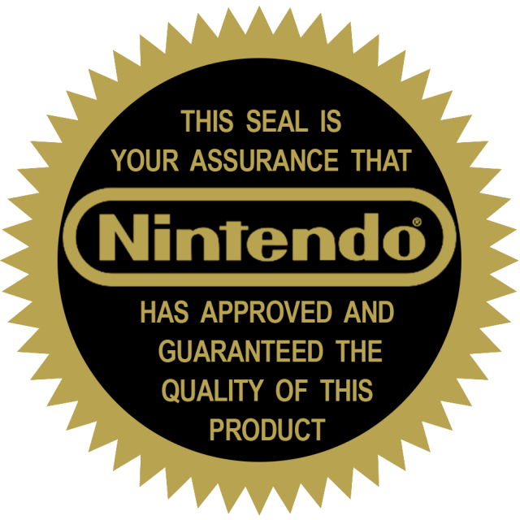
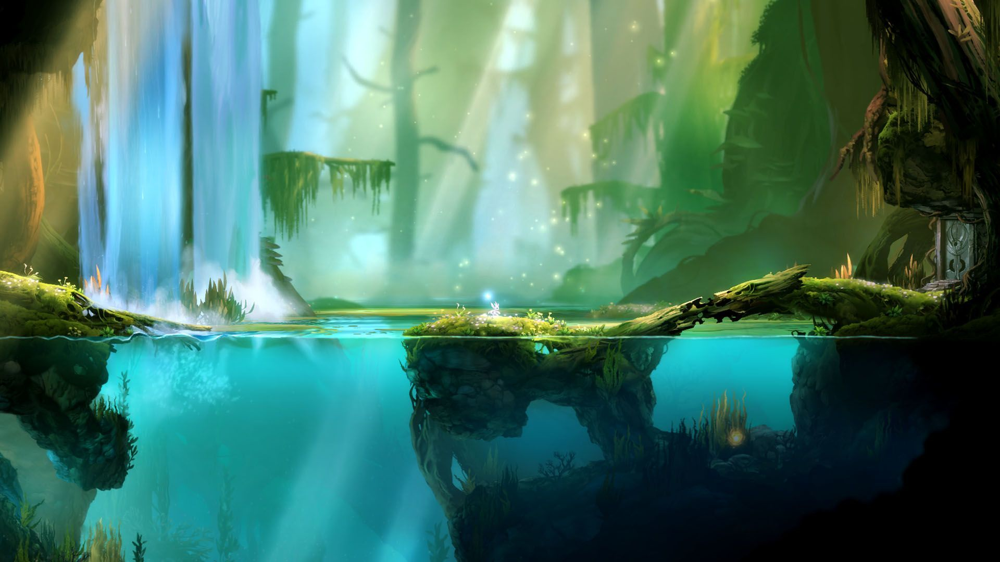

3 - Indie Games
Published 2020-04-21I was challenged by some friends last week to talk about something not related to work. I am a multi-faceted person, with many interests, so it makes sense to talk about many things. Today I'd like to talk about independently developed (indie) games.
Rogue and its Descendants
All of the earliest computer games were developed by people, not by companies. Back in those days, there was no such thing as a "game studio", because the concept of software was barely off the ground. Rogue was one of the most influential games in history, and it was developed by just a few guys. In rogue, you control a character (represented by an @ symbol) who walks through a procedurally generated dungeon, killing bad guys and grabbing loot. The game has had so many copies, inspired-bys, and spinoffs that it has become not one but two genres:
- rogue-likes, or games that are like rogue
- rogue-lites, or games that take one or more of the fundamental concepts of rogue and use it for a different type of game
Modern examples of a rogue-like are NetHack and Dungeon Crawl Stone Soup. Modern examples of a rogue-lite are Rogue Legacy and Slay the Spire.
The Nintendo Seal of Quality
We're going off on a minor tangent here, but I promise it's related to our topic at hand. Nintendo was not the first company to make a games console, but it was the first console that really took off. The Nintendo Entertainment System (or NES for short) sold like hotcakes, driven in part by the amazing first party titles like Super Mario Bros and The Legend of Zelda. However, a game console cannot be supported by only one company, so Nintendo did something quite shrewd. They introduced the "Nintendo Seal of Quality".
This let you know that Nintendo had verified that the game was family friendly, playable, and fun. It didn't mean the game would not have bugs, but it set a minimum bar of quality on games and led to a lot more trust in the game industry.
The AAA Publishing Industry
And with that newfound trust, the industry flourished. As consoles and home computers grew in power, so too did the games they could play. The consoles went from 8 bit to 16 bit to 64 bit and beyond. Computers gained mice to go with their keyboards, and graphical user interfaces to go with their terminals. Windows introduced the world to Klondike solitaire and Minesweeper. And companies like Sierra Entertainment and Interplay made their names with video games like King's Quest, Quest for Glory, and Fallout.
As the games industry flourished, new companies entered the console wars. Sega introduced the Genesis, Sony introduced the PlayStation, and Microsoft introduced the Xbox in three subsequent generations. Each had huge success with first party games like Sonic the Hedgehog, Tekken, Twisted Metal, and Halo.
When I was in college, the console wars were in full swing. New developers and publishers started to arise as big names in the industry. Activision started creating a new Call of Duty game every year or two. Bioware did the same for Mass Effect. Bethesda released new Elder Scrolls games to massive acclaim. Blizzard added Diablo 3 and Starcraft 2 to their already impressive portfolio (perhaps you've heard of a little game called World of Warcraft?). Electronic Arts released hit games across many movie franchises like Star Wars and Harry Potter.
These "AAA" games were becoming huge affairs, capable of costing and generating huge amounts of money. Games slowly crept up from the $20 of my youth to the $60 that is standard today. And compared to many traditional forms of entertainment, their value was immense. Going bowling once would cost you $7 for shoe rental and $12/hour for a lane. Going to the movies was $12/ticket and $5/soda for ~2 hours of fun. Don't even get me started on skiing or golfing. But a $60 game like Fable could net you tens or hundreds of hours of entertainment across several playthroughs.
Independent Games
AAA games were awesome... mostly. But we'll get back to that another time.
In 2009, a single developer created a little game you also may have heard of: Minecraft. When I was in college, I started hearing about this little game named Minecraft, and how super fun it was from all my friends. Now these are the same friends who told me about Halo and Call of Duty, so I had some faith in them. But I looked at the game and it looked like crap. Super blocky, probably not fun at all. Fast forward about a year to when a friend lets me try it overnight at his house. I started at about 6pm. I realized at about 6am that I had neither eaten, slept, nor used the restroom for the last 12 hours. I was in dire need of all three.
Minecraft is the most successful video game of all time in terms of pure sales numbers. But it wasn't developed by a fleet of people working for millions of dollars before a copy was ever sold. It was developed by a single guy. This is what I call
The Paradox of Indie Games
A game's sales and price are not linearly related to the cost of and number of people developing it.
The Hockey Stick
As the games industry has matured, it has also exploded. Steam has almost 30,000 games, and it's not the only seller in town. Epic Games has a huge and growing library of awesome games. Good ol Games refreshes old games, but has also developed many of their own, and has the best launcher, GOG Galaxy.
The problem with all these games is it's hard to sort through them all. There are new games coming out literally every single day. The good news is that means that you can now get incredible games for a fraction of that $60 price tag. The bad news is that if you want to get into game development, you've got a tough road ahead.
Why are Indie Games so great?
The "standard" price for an independently developed game is $15. I've heard it said that you should sleep on any purchase larger than $15, which makes this the perfect price point for impulse buys. And I've made some impulse buys that have been incredibly rewarding. Let's talk about a few of these games.
Hollow Knight was developed by a team of 3 guys, but it's literally incredible in every dimension. It's the best metroidvania you can buy today, and it's only $15. You play as a bug who wields a nail like a sword. The gameplay is smooth and the controls are tight. The art is detailed and hauntingly beautiful. It's also carefully designed, with incredible parallax effects and a consistent and important color theme. The soundtrack is amazing (thank you Christopher Larkin!) and certainly worth listening to all by itself. It's awesome enough that one of my favorite YouTubers, 8 bit music theory, did a whole 3 part series on the music alone.
Slay the Spire, which I mentioned as a rogue lite above, is a deckbuilding dungeon crawler. Cards are a great source of randomness, and every run feels different due to the many choices you're given at each floor of the spire. The art is good, the music is good, and the gameplay is top notch.
Super Meat Boy is an amazing 2d platformer developed by the two man Team Meat, and scored by the amazing Danny Baranowsky. In this game, you play as the titular Meat Boy, and you rescue your girlfriend Bandage Girl from the evil Dr. Fetus. Each level is filled with horrible dangers like buzzsaws and spikes and lava and salt and infinite pits. After each level, you get to watch all your runs at once, which is a soothing catharsis after the rage that is trying to beat the level.
Can I sneak another metroidvania in here? No? Too bad, it's my blog. (I might have a type...) Ori and the Blind Forest (recently sequeled as Ori and the Will of the Wisps), is a game that will make you cry. Tears of sadness. Tears of joy. Tears of pride. But never tears of frustration. You play as Ori, an adorable small white forest spirit. You go through beautiful area after beautiful area, each one a masterpiece, each one worth screenshotting. The platforming, puzzles, and combat are almost overshadowed by the beautifully tragic story. (P.S. Don't believe me on the beauty? Check out this screenshot of actual gameplay)

Indie Studio Butterscotch Shenanigans started as a purely mobile game developer and have built their 2 (then 3, then a few more) person studio from the ground up. Their biggest hit, Crashlands, is probably the only mobile game worth playing, and their upcoming LevelHead promises to be another hit. They also have a really cool podcast about game development.
Takeaways
There are hundreds if not thousands of other games worth mentioning here. None were developed by a huge "AAA" studio for a big brand name publisher. Many of them are free or incredibly low cost. The golden age of video games is upon us, and shows no signs of stopping. I hope you will take the opportunity to check out some of these indie games, maybe give one a try. You might like it.
◆